About me
- 2000: DeCSS
- 2001: Seth David Schoen
- 2006: Met him
- 2007: Concluded the community is too small
- 2009: Founded OpenHatch
All SourceForge Projects (n=145,850)
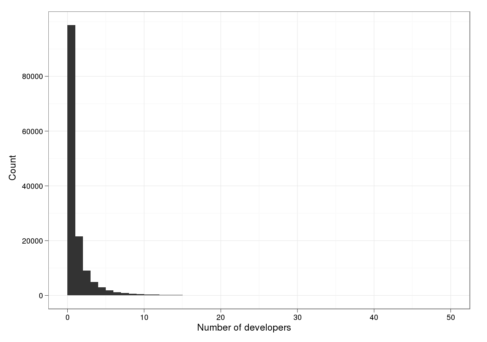
“Mature” and “Production” SourceForge Projects (n=29,821)
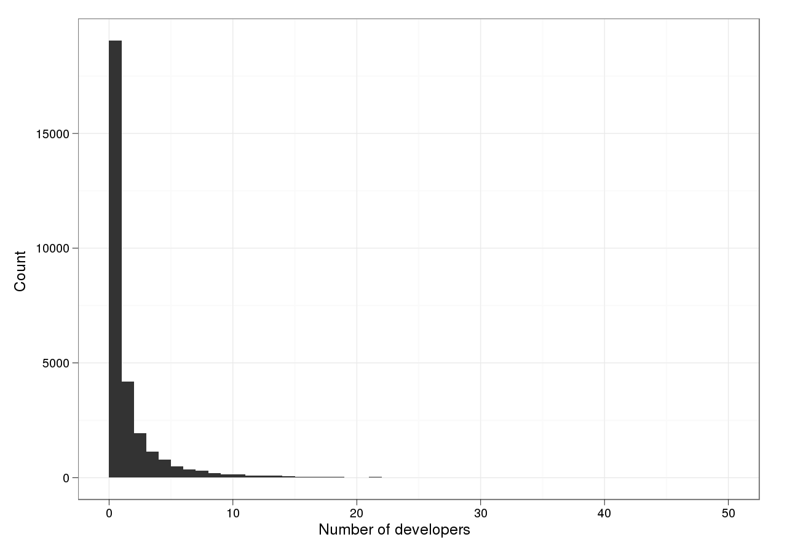
SF.net Projects Downloaded >=99 times (90th %ile)
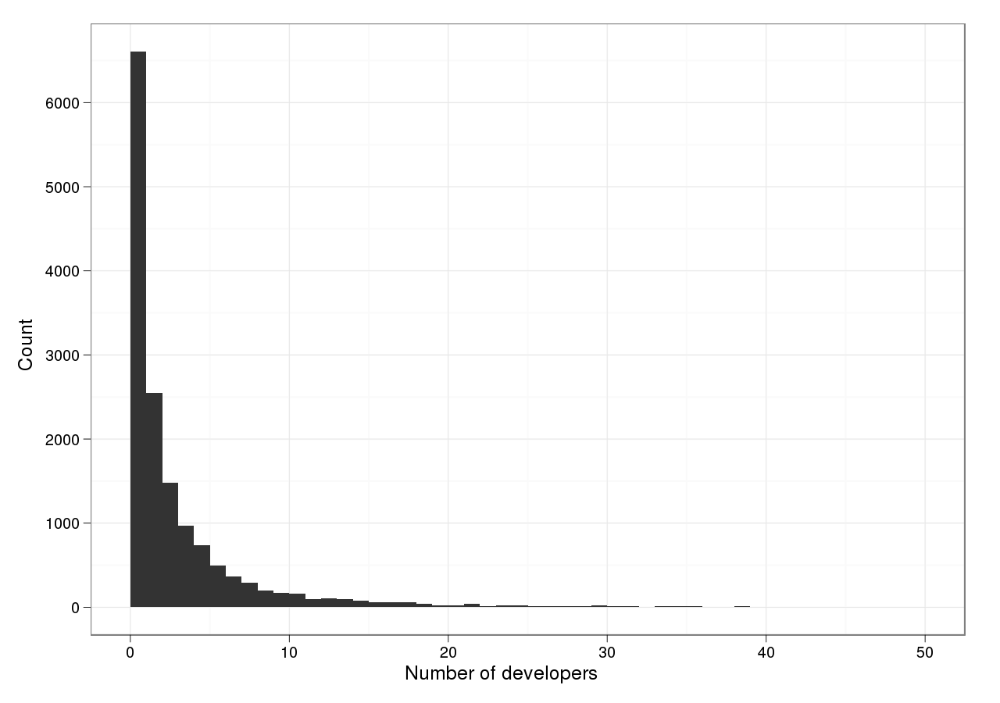
Scratch projects 1+ year after publication (n=249,428)
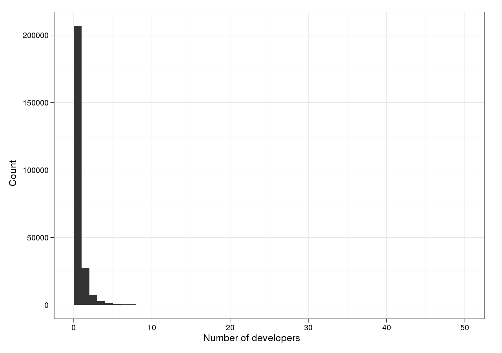
Google Code Projects (n=195,834)
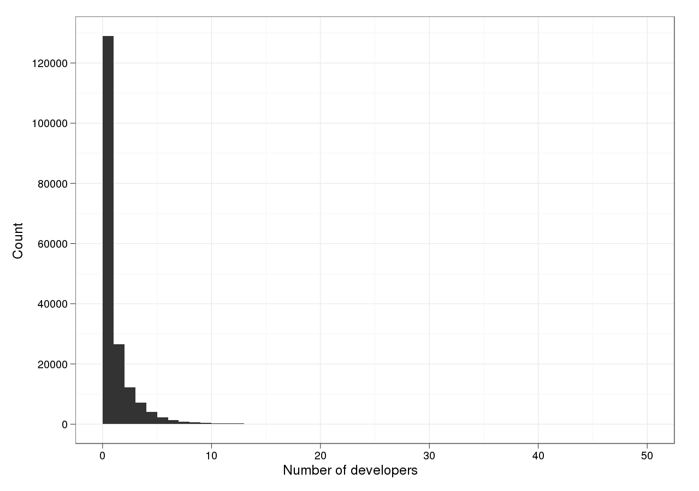
Active Google Code Projects (n=74,398)
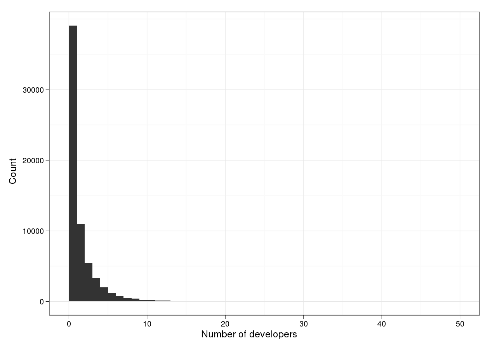
Github public projects (developers are “watchers”) (n=265,088)
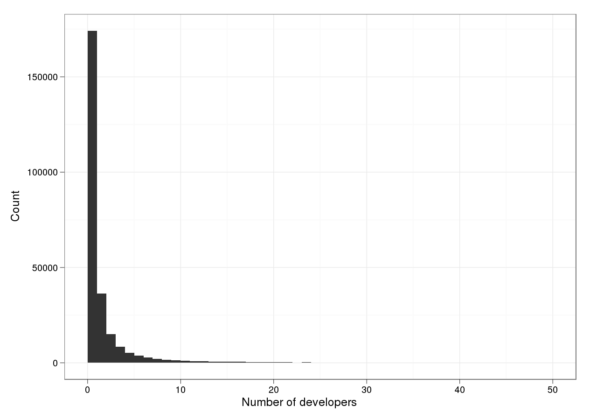
FLOSS survey, 2001
Rishab Aiyer Ghosh
Rüdiger Glott
Bernhard Krieger
Gregorio Robles
International Institute of Infonomics, Maastricht
Image
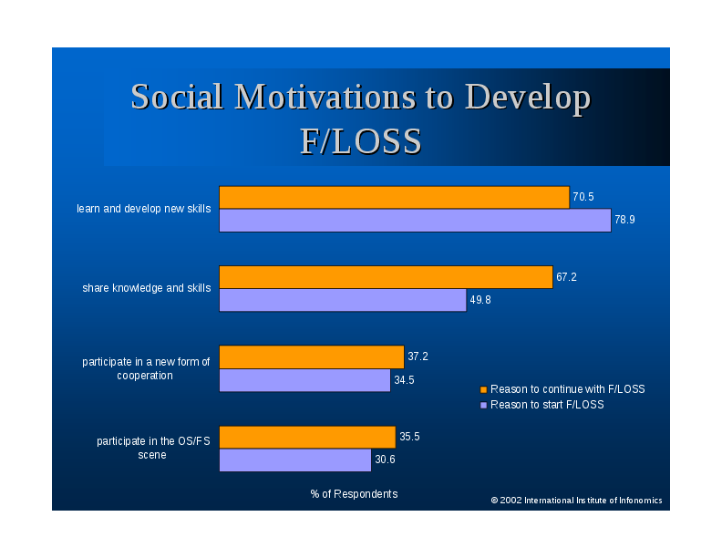
Gender stats
- 1.1% women in FLOSS survey
- 1.6% in separate FLOSS-US survey
Survey methodology
"Rather than selecting out a small, well-controlled sample...
we allowed respondents to decide for themselves whether they should be considered “developers”..."
"Our goal has been to analyze the entire... community."
Reaction
Questions about Ghosh results
- Does Ghosh's survey find fewer women because it mostly surveyed people who start projects?
- Are the men in FLOSS and the women generally using separate hosting services?
- Are women under-represented because, as a group, they were less likely to fill out the survey?
Tbirdimage
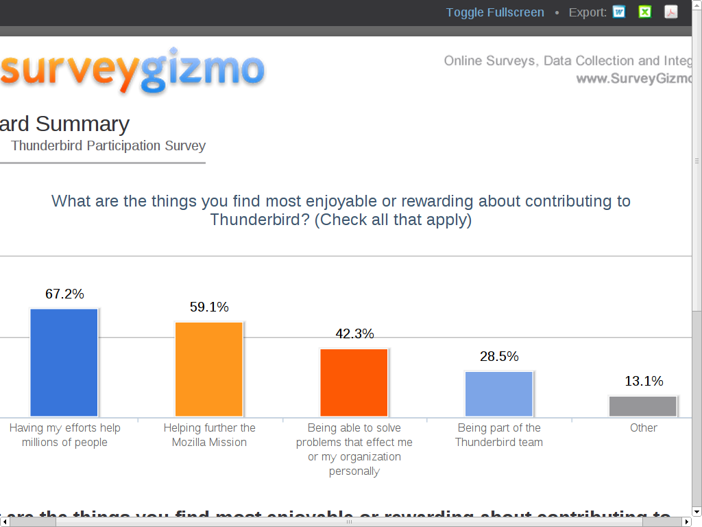
"Who Writes Linux?" report
- Yearly from the Linux Foundation (these numbers re: 2.6.30)
- Changes per hour: 6
- # of lines: 11 million
- # of companies: 240
Reflections: What are we measuring, and why?
- Academic factoids
- Being measured by people who don't have an interest in the results.
- Opt-in surveys are hopelessly broken, unless you know, very clearly, who has responded and who did not.
Reflections: Maybe...
- ± 50% is good enough for activists
- But do we know it's +/- 50%?
- How do we measure progress?
Going forward, let's think about how to be useful.
2008 Wikipedia survey
- For 1 week, a link on the top of every page
- (I don't remember seeing it)
- Goals of suvey: Answer...
- Why do people start+stop editing?
- Do people know WMF is a non-profit?
- What are Wikipedia editors' demographics?
- Collaboration between WMF and UNU-MERIT (Ghosh et al.)
Basic demographics
Age
- 25% younger than 18
- 50% younger than 22
Gender
- Readers: 31% female, 69% male
- Editors: 13% female, 87% male
Language
Wikipedia Editor Survey, 2011
- The first ever semi-annual survey of Wikipedia editors
- "Conducted on Wikipedia and presented to logged-in users"
- Results: 8.5% female
- Is it getting worse?
- Will we ever know?
comScore vs. UNU-MERIT
- UNU-MERIT: 26% Russian
- comScore: 2.5% Russian
Pew Survey, 2010
- Goal: Understand Internet use and adoption in the United States
- Method: Call random USians over 18
- Results: % of US (not % of Wikipedia)
- Afterward: Publish everything
Pew's Wikipedia demographics
Age
- Of 18-29 year olds: 62% read it
- Of 30-49 year olds: 52% read it
- Of 50-64 year olds: 49% read it
- Of 65+ year olds: 33% read it
Gender
- Of Males: 56% read it
- Of Females: 50% read it
Pew vs. UNU-MERIT
Gender:
- UNU-MERIT: 31% female, 69% male
- Pew: 47% female, 53% male
Other discrepancies:
- Age
- Marital status
- Education level
Data recovery
Adjust response data to match Pew demographics, using logistic "propensity score" to model non-random selection.
- Female editors: 12.7% -> 16.1%
- Female editors in US: 17.8% -> 22.7%
- Credit: Benj. Mako Hill and Aaron Shaw (Search: [hill shaw gender wikipedia pew])
- Conclusion: So close to 25% goal!
What they say vs. What they do
Wikipedia editor survey 2011:
- 70% say receiving a Barnstar makes them more likely to edit.
Shaw & Hill, 2012 (Shaw dissertation)
- Measure edit range over 5 weeks before and after receiving Barnstar
- Net: -1.72 edits per week change
- People who moved star to personal page: +3
- People who did not move star: -5
- Search: [shaw interactional account dissertation]
wikiHow demographics survey: motivation
- Inspired and shocked by Wikipedia Editor Survey results
- Wondered if they had same lack of gender diversity
- Ran a survey!
wikiHow demographics survey: methodology
- Over three weeks, find active users
- Send them a talk page message
- 50% response rate; N=126
- Sent by the wikiHow community manager
wikiHow demographics survey: results
- 56% of respondents were female
- 52% are 15 or younger
- 24% are 16-25
- The older the contributor, the more likely to be male.
- The more experienced the contributor, the more likely to be male.
How to increase data quality for opt-in surveys
- Ask readers to fill out the same survey
- Adjust contributor response rate using known demographics of readers
Questions about wikiHow data
Questions:
- 50% of survey respondents under 15?
- Was gender mandatory to fill in?
- Which editing levels were more/less likely to respond?
Questions about wikiHow data
Questions and answers:
- 50% of survey respondents under 15?
- Was gender mandatory to fill in?
- Which editing levels were more/less likely to respond?
- 19/123 people did not fill out age.
- Gender was required.
- We may never know which editing levels responded better.
- Overall: Great!
Open Source Comes to Campus survey notes
- Gender as a text field has 100% response rate
- (Some) undergrads really don't know git
Topic: Behavioral studies
Debian mentorship, 2010: "Four days"
- Can we review new contributors' packages within four days?
- If so, they know what to expect.
- Package review increased sharply at the start...
- and then we failed to meet our commitment...
- ...and flatlined to its old amount.
- Follow through is hard.
GNOME Women's Outreach Project
Or: The First Great FLOSS Behavioral Study
- GSoC 2006: 181 applicants
- Women's Summer Outreach Program, started by Hanna Wallach and Chris Ball
- 100 (women) applicants
- Structure: Same as GSoC: mentored coding internship. (Separate funding.)
- Conclusion: Targeted outreach changes the behaviors we see!
GNOME Women's Outreach Project
Open questions:
- Do Women's Outreach Project particpants stick around in GNOME similarly to other summer interns?
- (Maybe more. Maybe less.)
The study no one has done yet
- Select 200 random users on e.g. Github
- Find out their demographic information
- Watch their activity levels
- (This is hypothetical for now. Your project?)
2010: Open Source Comes to Campus
- 30% of applicants were women
- and 30% of most excited applicants!
- so, 30% of attendees
- No gender-specific outreach
- Great two-day event
- ...though, did we leave an impact?
- To track: Compare Github activity against other similar population
RailsBridge1
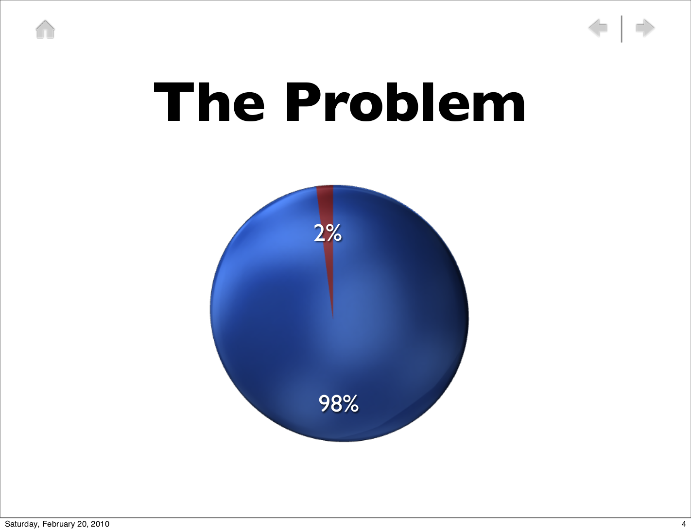
RailsBridge2
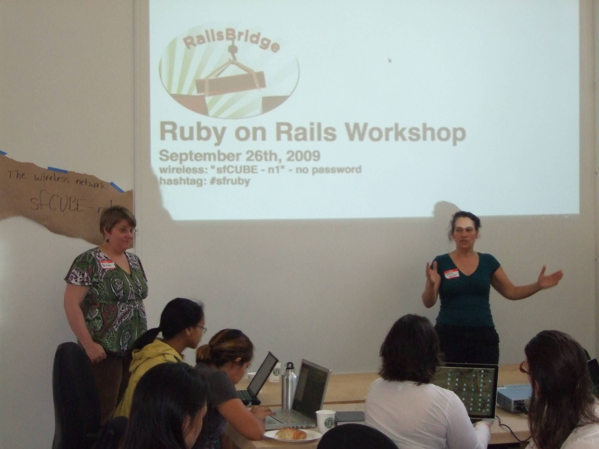
RailsBridge3
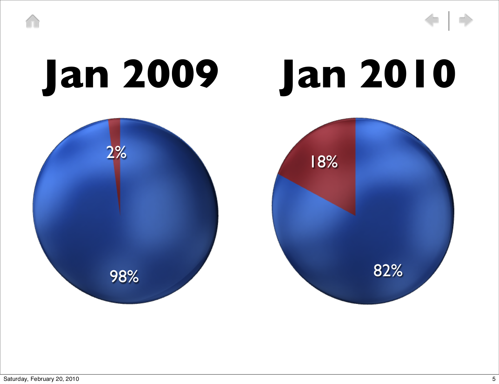
It worked in Boston
Clones popping up
- PyStar Philly
- Chicago Python Workshop
- Columbus Python Workshop
- Beginners & Friends Python Programming Workshop in Auckland, NZ
- Tying them all together as OpenHatch Affiliated Events
Probable limitation(s):
- Only applies if you can hijack existing group
Set goals, and then achieve them
- PSF grant to OpenHatch: program began June 1
- Six new intro/diversity events
- Eight groups see improved speaker diversity
Wikipedia bot messages -- does niceness matter?
Wikipedia bot messages
- "Changing the tone and language of the generic vandalism warning.."
- increasing the personalization (active voice rather than passive, explicitly stating that the sender of the warning is also a volunteer editor, including an explicit invitation to contact them with questions)
- decreasing the number of directives and links
- and decreasing the length of the message
- ...led to more users editing articles in the short term.
- More: http://meta.wikimedia.org/wiki/Template_A/B_testing/Results
- Clarity, not niceness.
MediaWiki community health
- Engineering metrics in June
- 116 unique committers contributed patchsets of code to MediaWiki.
- The total number of unresolved commits remained stable around 960.
- About 30 shell requests were processed.
- Wikimedia Labs now hosts 166 projects and 1520 users; to date 2052 instances have been created.
- The tools project in Labs now hosts 222 tools and 193 members.
- Exploring dashboard: <http://korma.wmflabs.org/browser/>
Ubuntu Developer Advisory Team
- This team in terms of UbuntuDevelopment, tries to fulfill the following tasks in the Ubuntu world:
- Reach out to new contributors, thank them for their work and get feedback.
- Reach out to people who might be ready to apply for upload rights and help them.
- Reach out to contributors that went inactive and get feedback from them and offer help.
Source: their homepage, last edited 2012-04-02.
Ubuntu DAT: New Contributor Report
- DAT asked open-ended questions; 63% response rate
- 9 love Launchpad; 9 dislike it
- Reviews are "surprisingly painless"
- Docs are troublesome: "overwhelmed at all the information" and by "contradictory information" that is "difficult to follow in a logical manner"
- Contributing is a "surprisingly painless process"
- Real magic is in the Trello cards...
Ubuntu DAT: Continous tracking
- Data from Ultimate Debian Database
- General approach: Make people happy, rather than tell them what to do
- ...but does it work?
- To answer that question: OpenHatch Greenhouse
To manage your own projects
GSoC meta mentorship (pipe dream)
- What makes GSoC better?
- What does a good GSoC mean?
- More failed students!
- Students still active 3-6 mo later.
- Happy mentors.
GSoC meta mentorship (pipe dream)
Theory:
- Mentors would benefit from being in touch with each other.
- Mentors would benefit from being asked to report on status.
- Test: create opt-in meta mentorship.
- ENOSPC
Thanks to...
- Benjamin Mako Hill, for graphs (and FLOSSmole for source data)
- Ubuntu DAT for giving me access
- Karen Rustad, for conversations and help with slide prep
- David Lu, Greenhouse maintainer
- Sarah Mei for slide piracy
Next steps
Stay in touch: